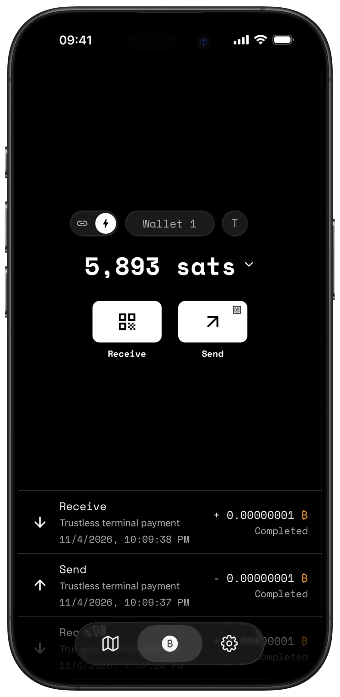
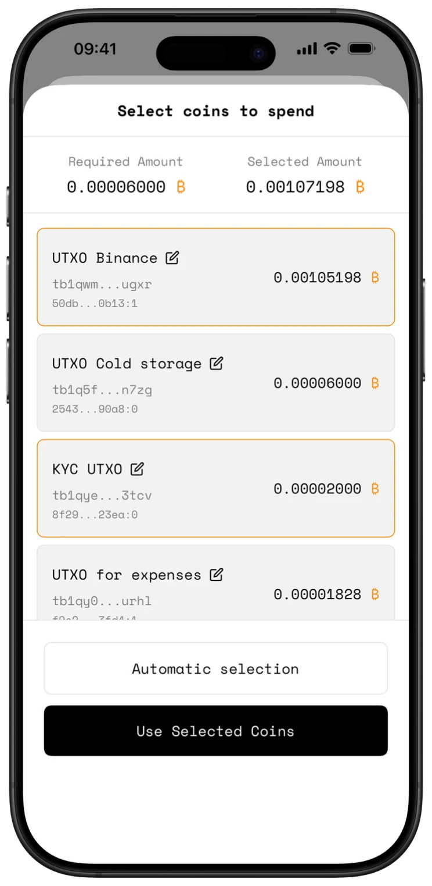

Monedero de Bitcoin de código abierto
Bitcoin en
tus manos.
Tú guardas las claves. Paga a un amigo por Lightning, encuentra un comercio que acepte bitcoin o elige exactamente qué fondos quieres gastar.


¿Qué método de pago elijo?
| De un vistazo | En cadena | Lightning |
|---|---|---|
| Qué comparte quien recibe | Una dirección de Bitcoin | Una solicitud Lightning |
| Qué saldo utilizas | Tus bitcoin en cadena. Puedes elegir las entradas y la tarifa por vbyte. | Tu saldo Lightning. Comprueba el importe antes de confirmar. |
| Cómo comprobar el resultado | Consulta la transacción y sus confirmaciones en el historial. | Consulta el estado en el monedero. En caja se puede verificar la misma solicitud en Terminal. |


Paga en persona
Encuentra un comercio.
Paga en sats.
Abre el mapa y filtra por restauración, tiendas o servicios. En la caja, pide una factura Lightning, escanéala con tu monedero y revisa el importe antes de confirmar.
Cómo se paga con LightningDecide qué monedas gastas.

Mantén tus monedas separadas
Un pago de un amigo y un retiro de un exchange pueden llegar al mismo monedero. Con el selector de monedas decides qué salidas se usan en un pago y cuáles se quedan sin gastar.
Una dirección nueva para cada persona que te paga
Comparte un QR nuevo para tu próximo cobro en la cadena. Todas tus direcciones de recepción pertenecen al mismo monedero. Puedes seguir sus movimientos en un solo lugar y dar una dirección distinta a cada persona.

Conecta tu propio nodo
¿Ya tienes un servidor Electrum? Conéctalo en Settings para que el monedero consulte el saldo y el historial de la cadena a través de tu propia infraestructura.
Paga desde un monedero con las claves fuera de línea
Prepara en tu teléfono
Importa una clave pública extendida compatible como monedero de solo lectura. Para enviar bitcoin a un amigo, introduce su dirección de Bitcoin y el importe. Exporta la transacción sin firmar en formato PSBT.
Firma sin conexión
Abre la PSBT en tu dispositivo de firma sin conexión compatible. Comprueba el destinatario, el importe y la comisión en su pantalla y firma con las claves que guardas allí.
Transmite desde Trustless
Toca Import signed transaction y escanea el QR del dispositivo de firma. Revisa la transacción en Trustless, autoriza su transmisión y consulta las confirmaciones en el historial.
Preguntas frecuentes
Antes de
empezar.
Decide desde el principio cómo guardarás tu copia de seguridad y qué saldo utilizarás para cada pago.
Ver todas las guías¿Cómo recupero mi monedero si pierdo el teléfono?
Anota la frase de recuperación, guárdala en privado y sin conexión, y compruébala en la app. Con ella puedes recuperar las claves. Si usas Terminal, exporta también su copia cifrada para conservar los registros del negocio. Guía de copias de seguridad.
¿Por qué aparecen dos saldos?
El saldo en la cadena se compone de salidas de transacciones de Bitcoin. Para los pagos cotidianos con facturas Lightning, Trustless utiliza el SDK de Breez con Spark. Pasar fondos de un saldo al otro requiere una operación aparte. Los pagos y retiros habituales por Lightning dependen de la disponibilidad del servicio. Comparar los métodos de pago.
¿Puedo consultar un monedero si firmo con otro dispositivo?
Importa una clave pública compatible para abrir el monedero en modo de solo lectura. Podrás consultar el saldo y preparar una transacción de Bitcoin parcialmente firmada. Fírmala con tu dispositivo sin conexión y vuelve a importarla en Trustless para transmitirla a la red. Cómo firmar con otro dispositivo.